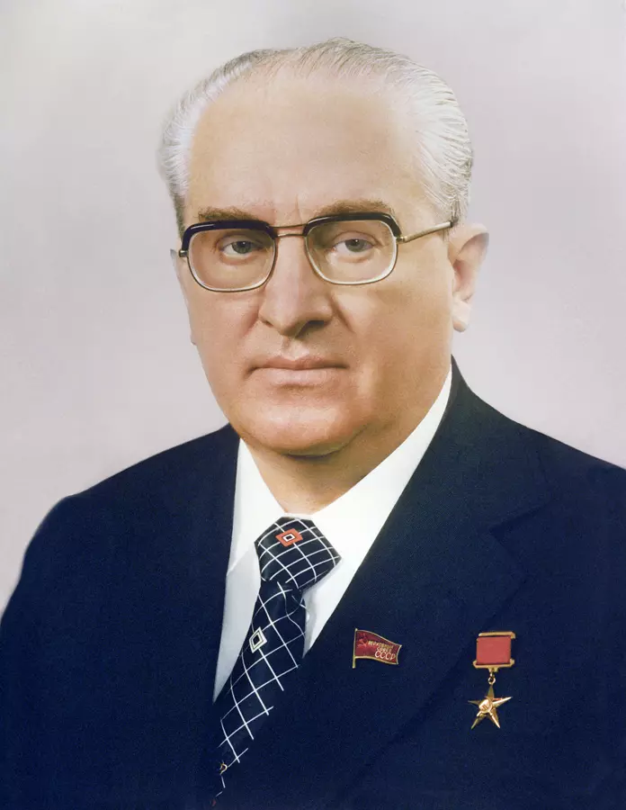
Андропов Юрий Владимирович
1914–1984
Генеральный секретарь ЦК КПСС (1982–1984)
Ю́рий Влади́мирович Андро́пов (2 [15] июня 1914, станция Нагутская, Ставропольская губерния, Российская империя — 9 февраля 1984, Москва, РСФСР, СССР) — советский государственный и политический деятель, руководитель СССР в 1982—1984 годах. Генеральный секретарь ЦК КПСС (1982—1984), Председатель Президиума Верховного Совета СССР (1983—1984). Председатель Комитета государственной безопасности СССР (1967—1982). Секретарь ЦК КПСС по идеологии в 1982 году и секретарь ЦК КПСС (1962—1967), член Политбюро ЦК КПСС с 1973 года (кандидат с 1967 года). Депутат Верховного Совета СССР 3-го и 6—10-го созывов. Герой Социалистического Труда (1974), кавалер четырёх орденов Ленина (1957, 1964, 1971, 1974). После смерти Л. И. Брежнева, последовавшей 10 ноября 1982 года, с 12 ноября 1982 года Юрий Андропов сменил его на посту Генерального секретаря ЦК КПСС, став официальным лидером Советского Союза. Во время своего недолгого (15 месяцев, или 1 год и 98 дней, или 463 дня) пребывания в должности Андропов предпринял ряд мер, направленных на устранение коррупции партийно-государственного аппарата, на повышение экономической эффективности социалистической системы. Против ряда руководителей коммунистической партии были возбуждены уголовные дела, началось расследование. Под лозунгом «Рабочее время — работе!» началась борьба с прогулами, иногда принимавшая анекдотические формы, вплоть до опроса зрителей в кинотеатрах о месте и времени работы.
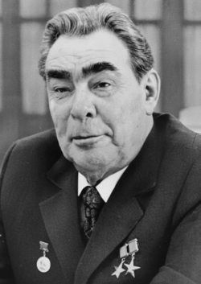
Брежнев Леонид Ильич
1906–1982
Генеральный секретарь ЦК КПСС (1966–1982)
Леони́д Ильи́ч Бре́жнев (6 [19] декабря 1906, по другим данным, 19 декабря 1906 [1 января 1907], Каменское, Екатеринославская губерния — 10 ноября 1982, Заречье, Московская область) — советский государственный и партийный деятель, занимавший высшую руководящую должность в КПСС в течение 18 лет (с 1964 и до своей смерти в 1982 году). Первый секретарь ЦК КПСС (1964—1966). Генеральный секретарь ЦК КПСС (1966—1982). Маршал Советского Союза (1976). Четырежды Герой Советского Союза (1966, 1976, 1978, 1981), Герой Социалистического Труда (1961). Кандидат в члены Президиума ЦК (1952—1953; 1956—1957), секретарь ЦК КПСС (1952—1953; 1956—1960, 1963—1964). В 1960—1964 годах — председатель Президиума ВС СССР. Председатель Бюро ЦК КПСС по РСФСР (1964—1966). Депутат Совета Союза Верховного Совета СССР (3—10-е созывы, 1950—1982). Член Союза журналистов СССР и Союза писателей СССР. Кавалер восьми орденов Ленина. Лауреат Международной Ленинской премии «За укрепление мира между народами» (1973) и Ленинской премии по литературе (1979). В 1978 году награждён орденом «Победа» (в 1989 году это награждение как противоречащее статуту ордена отменено указом за подписью Председателя Верховного Совета СССР М. С. Горбачёва). Всего имел 117 советских и иностранных государственных наград. Участник Великой Отечественной войны, участник Парада Победы на Красной площади 24 июня 1945 года (замполит сводного полка 4-го Украинского фронта).

Буш Джордж Герберт Уокер
1924–2018
41-й президент США (1989–1993)
Джордж Ге́рберт Уо́кер Буш, также известный как Джордж Буш — старший (англ. George Herbert Walker Bush; 12 июня 1924, Милтон, Массачусетс — 30 ноября 2018, Хьюстон) — американский государственный и политический деятель, 41-й президент США (1989—1993 гг.), 43-й вице-президент США при Рональде Рейгане (1981—1989 гг.), конгрессмен, дипломат, директор Центральной разведки. Неофициальное прозвище «старший» получил после того, как его сын Джордж Буш — младший в 2001 году стал 43-м президентом США, чтобы устранить неоднозначность толкования фразы «президент США Джордж Буш». С 26 декабря 2006 года по 30 ноября 2018 года являлся старейшим по возрасту из живших на тот момент президентов США, а 24 ноября 2017 года стал самым долгоживущим в истории президентом США (побив рекорд Джеральда Форда). Этот титул он держал до 21 марта 2019 года, когда его пережил Джимми Картер. Родился в Массачусетсе в семье сенатора и нью-йоркского банкира Прескотта Буша и Дороти Уокер Буш. После нападения на Пёрл-Харбор в 1941 году, в возрасте 17 лет, Буш отложил поступление в колледж и стал самым молодым лётчиком ВМС США в то время. Служил до конца войны, затем поступил в Йельский университет. Окончив его в 1948 году, переехал с семьёй в Западный Техас, где начал нефтяной бизнес, став миллионером к 40 годам. Буш вошёл в политику сразу после создания собственной нефтяной компании, став членом Палаты представителей, а также занимая другие должности. Он неудачно принял участие в партийных выборах президента в 1980 году, но был выбран в качестве кандидата на должность вице-президента кандидатом в президенты Рональдом Рейганом, и пара победила на выборах. В течение срока Буш возглавлял административную группу по дерегуляции рынка и борьбе с наркотиками. В 1988 году Буш успешно начал кампанию на выборах президента, победив оппонента от демократов Майкла Дукакиса. Международная политика, проводимая Бушем, отмечена военными операциями, проведёнными в Панаме, на Филиппинах и в Персидском заливе, падением Берлинской стены в 1989 году и распадом СССР два года спустя. Во внутренней политике Буш изменил своему слову, данному в 1988 году, и после борьбы в Конгрессе подписал увеличение налогов, которое Конгресс утвердил. Вследствие экономических проблем Буш проиграл на выборах президента 1992 года демократу Биллу Клинтону. Буш — отец 43-го президента США Джорджа Уокера Буша и 43-го губернатора Флориды Джеба Буша.
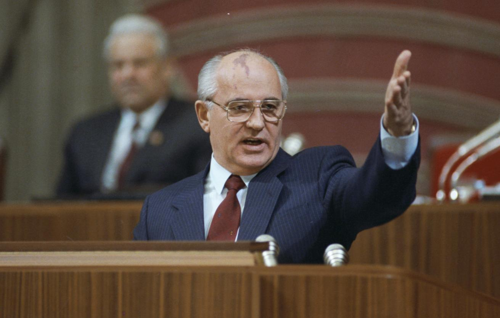
Горбачёв Михаил Сергеевич
1931–2022
Президент СССР (1990–1991)
Михаи́л Серге́евич Горбачёв (2 марта 1931, Привольное, Медвеженский район, Северо-Кавказский край, СССР — 30 августа 2022, Москва, Россия) — советский и российский государственный, политический, партийный и общественный деятель. Последний Генеральный секретарь ЦК КПСС (1985—1991). Последний Председатель Президиума Верховного Совета СССР (1988—1989), затем первый председатель Верховного Совета СССР (1989—1990). Единственный в истории президент СССР (1990—1991). Основатель Горбачёв-Фонда. С 1993 года и до самой смерти являлся соучредителем издания «Новая газета» и членом редакционного совета, владел 10 % акций издания. Кавалер трёх орденов Ленина (1971, 1973, 1981), ордена Святого Андрея Первозванного (2011) и лауреат Нобелевской премии мира (1990). В период деятельности Горбачёва в должности главы государства и руководителя КПСС в Советском Союзе произошли серьёзнейшие изменения, повлиявшие на весь мир и ставшие следствием следующих исторических событий: масштабная попытка реформирования советской системы («Перестройка»); введение в СССР политики гласности, «нового политического мышления», свободы слова и печати, демократических выборов; реформирование социалистической экономики в направлении рыночной модели хозяйствования; окончание Холодной войны; вывод советских войск из Афганистана (1989); распад СССР и Варшавского блока.
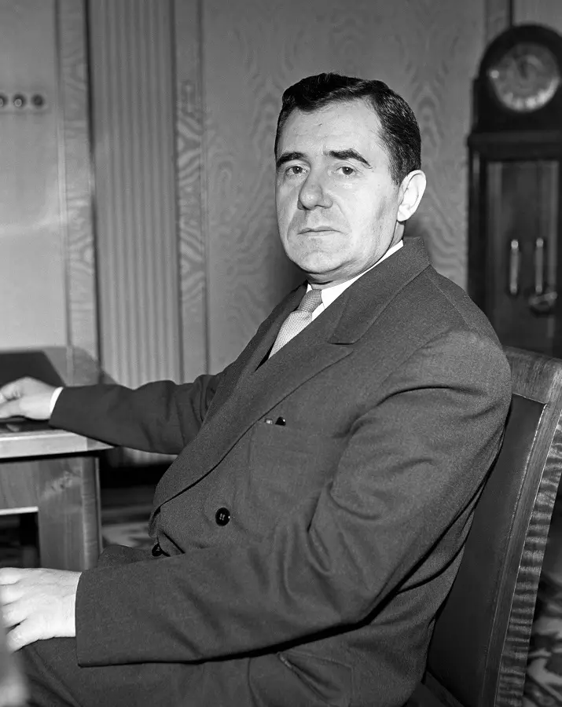
Громыко Андрей Андреевич
1909–1989
Министр иностранных дел СССР (1957–1985)
Андре́й Андре́евич Громы́ко (5 (18) июля 1909, деревня Старые Громыки, Речковская волость, Гомельский уезд, Могилёвская губерния, Российская империя — 2 июля 1989, Москва, РСФСР, СССР) — советский партийно-государственный деятель и дипломат, в 1957—1985 годах — министр иностранных дел СССР, в 1985—1988 годах — председатель Президиума Верховного Совета СССР. Член Политбюро ЦК КПСС (1973—1988). Доктор экономических наук (1956). В 1944 году как посол СССР в США возглавлял советскую делегацию на Международной конференции в усадьбе Думбартон-Окс, Вашингтон, США, по проблеме создания Организации Объединённых Наций. Участвовал в подготовке Тегеранской конференции, подготовке и проведении Ялтинской конференции, Крым, СССР (1945), конференции в Потсдаме (1945). В том же году руководил делегацией, подписавшей Устав ООН от имени СССР на конференции в Сан-Франциско, США. Входил в состав, а затем возглавлял государственные делегации СССР на 22 сессиях Генеральной Ассамблеи ООН. С конца 1940-х годов в интересах СССР более 20 раз использовал право вето в Совете Безопасности ООН, вследствие чего получил сначала в дипломатической среде, а затем и в прессе прозвище «Мистер Нет». Будучи сторонником мирных взаимоотношений СССР с США и их партнёрами по НАТО — западноевропейскими государствами, от имени советского правительства предложил более сотни инициатив в области разоружения. Его роль во время низшей точки советско-американских отношений — Карибского кризиса — является предметом научно-исторических дискуссий. Выдвинул инициативу заключения Договора о запрещении испытаний ядерного оружия в трёх средах (1963). В январе 1966 года вместе с А. Н. Косыгиным провёл переговоры, предотвратившие войну между Индией и Пакистаном. При его участии были подготовлены и подписаны Договор о нераспространении ядерного оружия (1968), Московский договор между СССР и ФРГ (1970), Договор об ограничении систем ПРО (1972), Договор о принципах взаимоотношений между СССР и США (1972), Договор о недопущении ядерной войны (1973), Договоры об ограничении стратегических вооружений в 1972 и 1979 годах, Заключительный акт Совещания по безопасности и сотрудничеству в Европе (1975). Вместе с тем А. А. Громыко в 1968 году поддержал ввод войск Варшавского договора в Чехословакию и подавление «Пражской весны», а в 1979 году входил в состав узкого круга высших руководителей государства, принявших решение о вводе советских войск в Афганистан. Был одним из ближайших соратников многолетнего советского коммунистического лидера Л. И. Брежнева. На посту главы советской дипломатии бессменно находился 28 лет, что является рекордом для СССР и Российской Федерации. В марте 1985 года на заседании Политбюро ЦК КПСС в Москве выдвинул кандидатуру М. С. Горбачёва на должность руководителя Коммунистической партии Советского Союза. Завершил политическую карьеру в 1988 году на посту Председателя Президиума Верховного Совета СССР — формального главы советского государства. Девиз всей дипломатической деятельности А. А. Громыко — «Лучше 10 лет переговоров, чем один день войны».
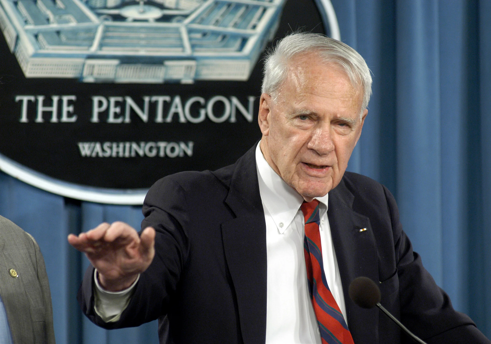
Шлезингер Родни Джеймс
1929–2014
Министр обороны США (1973–1975)
Американский государственный деятель, занимал посты министра обороны (1973–1975), министра энергетики (1977–1979) и директора ЦРУ (1973). Играл важную роль в формировании ядерной стратегии США в период холодной войны.
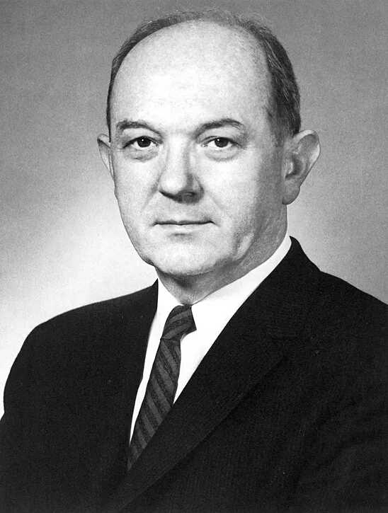
Раск Дин
1909–1994
Госсекретарь США (1961–1969)
Американский государственный деятель, занимал пост государственного секретаря США в администрациях Кеннеди и Джонсона. Участвовал в переговорах по Договору о частичном запрещении ядерных испытаний (1963).
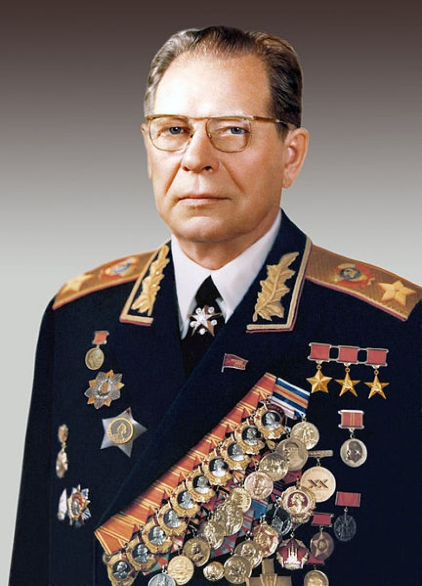
Устинов Дмитрий Фёдорович
1908–1984
Министр обороны СССР (1976–1984)
Дми́трий Фёдорович Усти́нов (17 [30 октября] 1908 года, Самара, Российская империя — 20 декабря 1984 года, Москва, РСФСР, СССР) — советский военачальник и государственный деятель. Маршал Советского Союза (1976). Герой Советского Союза (1978). Дважды Герой Социалистического Труда (1942, 1961). Кавалер одиннадцати орденов Ленина. Народный комиссар и министр вооружения СССР (1941—1953), министр оборонной промышленности СССР (1953—1957). Министр обороны СССР (1976—1984). Член ЦК КПСС (1952—1984), Секретарь ЦК КПСС (1965—1976), член Политбюро ЦК КПСС (1976—1984). В военное и послевоенное время Устинов успешно организовал и руководил производством вооружения, существенно повысив обороноспособность Советского Союза. В годы Великой Отечественной войны в ведении возглавляемого Устиновым Наркомата вооружения СССР находились конструирование, испытание, производств полевой, морской, противотанковой и зенитной артиллерии, пушечно-пулемётного вооружения для самолётов и танков, стрелкового оружия всех систем, оптических приборов и боеприпасов. Благодаря усилиям Устинова была эффективно организована работа всего ВПК СССР. Под руководством Устинова промышленность СССР произвела с 1941 по 1945 год военной продукции почти в 2 раза больше, чем промышленность Германии и оккупированных ею государств. Численность артиллерии за годы войны возросла в 5 раз, стрелкового оружия в 22 раза. После войны Устинов занимался повышением боевой мощи Вооружённых Сил, других силовых ведомств — координировал и направлял работу научных организаций, конструкторских бюро, промышленных предприятий для создания новых видов вооружения. Под руководством Устинова начались разработка и серийное производство ракетной и ракетно-космической техники, оснащение советской армии и флота ракетно-ядерным оружием, а также освоение космического пространства, в том числе в оборонных целях.
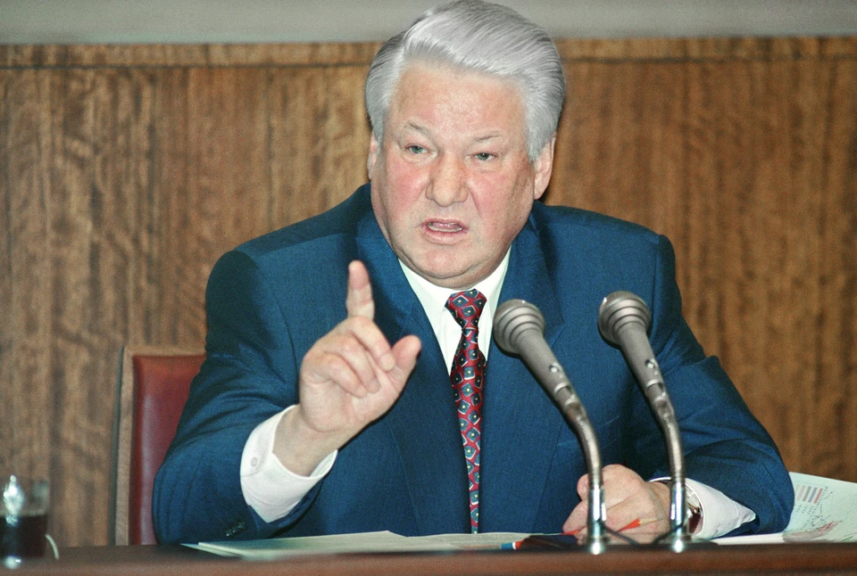
Ельцин Борис Николаевич
1931–2007
Первый Президент России (1991–1999)
Бори́с Никола́евич Е́льцин (1 февраля 1931, Бутка, Буткинский район, Уральская область, РСФСР, СССР — 23 апреля 2007, Москва, Россия) — советский и российский партийный, государственный и политический деятель, первый всенародно избранный Президент Российской Федерации (1991—1999); реформатор общественно-политического и экономического устройства России. В ноябре 1991 — июне 1992 годов одновременно возглавлял Правительство. С марта по май 1992 года исполнял обязанности Министра обороны Российской Федерации. Депутат Совета Союза Верховного Совета СССР 10 и 11 созывов (1979—1989); член Президиума Верховного Совета СССР (1984—1988). Народный депутат СССР и член Совета Национальностей Верховного Совета СССР (1989—1990). Народный депутат РСФСР и председатель Верховного Совета РСФСР (1990—1991). Член КПСС (1961—1990), член ЦК КПСС (1981—1990); в партии занимал посты первого секретаря Свердловского обкома КПСС (1976—1985), секретаря ЦК КПСС (1985—1986) и первого секретаря Московского горкома КПСС (1985—1987). Кавалер ордена Ленина (1981). Вошёл в историю как первый всенародно избранный глава российского государства, радикальный реформатор общественно-политического и экономического устройства России. Период правления Ельцина ознаменовался августовским путчем и распадом Советского Союза в 1991 году, либерализацией цен и приватизацией в начале 1992 года, попытками импичмента в 1993 и 1999 году, разгоном Верховного Совета и принятием Конституции 1993 года, противостоянием с КПРФ, первой чеченской войной (1994—1996) и началом второй чеченской войны, а также дефолтом в 1998 году.
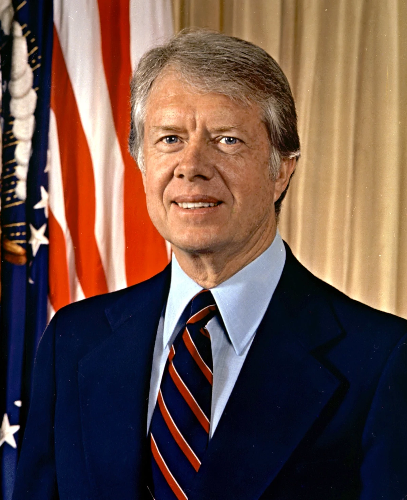
Картер Джеймс (Джимми)
1924–н.в.
39-й президент США (1977–1981)
Джи́мми Ка́ртер (англ. Jimmy Carter, полное имя Джеймс Эрл Ка́ртер — мла́дший, англ. James Earl Carter Jr.; 1 октября 1924, Плейнс, округ Самтер, штат Джорджия, США — 29 декабря 2024, Плейнс, округ Самтер, штат Джорджия, США) — американский государственный и политический деятель, 39-й президент США (1977—1981) и 76-й губернатор штата Джорджия (1971—1975) от Демократической партии. Лауреат Нобелевской премии мира 2002 года. Первый и единственный президент в истории США, достигший возраста 100 лет. Рекордсмен по пребыванию в статусе экс-президента США — 43 года и 344 дня. Лейтенант ВМС США (1952). 1 октября 2024 года Картеру исполнилось 100 лет, он стал первым президентом в истории США, достигшим такого возраста. Был членом Американского философского общества (1991).
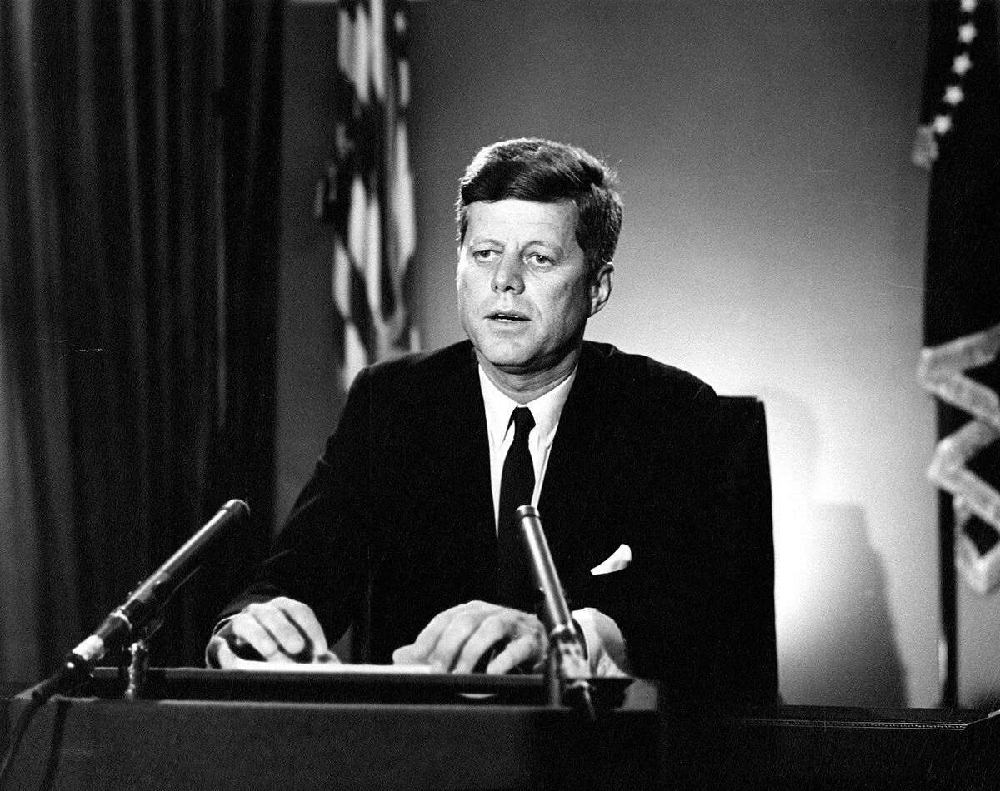
Кеннеди Фицджеральд Джон
1917–1963
35-й президент США (1961–1963)
Джон Фицджералд Ке́ннеди (англ. John Fitzgerald Kennedy, известный также как JFK (Джей-Эф-Кей); 29 мая 1917, Бруклайн, штат Массачусетс, США — 22 ноября 1963, Даллас, штат Техас, США) — американский политический и государственный деятель, 35-й президент США (1961—1963) от Демократической партии. Член Палаты представителей США (1947—1953) от штата Массачусетс, в 1953—1960 годах работал сенатором от Массачусетса. Его президентство пришлось на особо напряжённый период Холодной войны. По мнению большинства граждан страны, Кеннеди входит в десятку величайших американских президентов в истории. Почти трёхлетнее президентство Кеннеди ознаменовано Берлинским кризисом, Карибским кризисом, операцией в заливе Свиней, космической гонкой между СССР и США, которая привела к началу космической программы «Аполлон», а также серьёзными шагами по преодолению расовой дискриминации. Именем Кеннеди в США названо большое количество объектов, улиц, школ и прочих (к примеру, международный аэропорт в Нью-Йорке). По мнению большинства граждан страны, Кеннеди входит в десятку величайших американских президентов в истории. В современном общественном сознании Кеннеди чаще всего связывают с его убийством, потрясшим весь мир, многочисленные гипотезы разрешения которого выдвигаются по сей день.
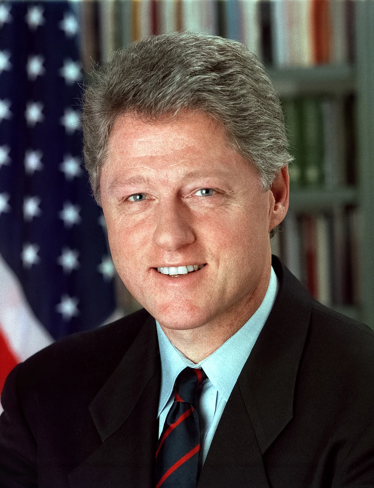
Клинтон Уильям (Билл)
1946–н.в.
42-й президент США (1993–2001)
Уи́льям Дже́фферсон (Билл) Кли́нтон (англ. William Jefferson "Bill" Clinton), при рождении — Уи́льям Дже́фферсон Бла́йт III (англ. William Jefferson Blythe III; род. 19 августа 1946, Хоп, Арканзас, США) — американский государственный и политический деятель, 42-й президент США (1993—2001) от Демократической партии. Супруг государственного секретаря и кандидата в президенты США 2016 Хиллари (Родэм) Клинтон. Доктор права (1973). До своего избрания на пост президента пять раз избирался губернатором штата Арканзас (1979—1981, 1983—1992). Он стал первым президентом, родившимся в поколении бэби-бумеров. Клинтон — первый президент-демократ, чья политика отражала позицию центристской политической философии «третьего пути». Клинтон руководил страной в течение самого длительного периода экономического роста мирного времени в американской истории. В годы его руководства наблюдался снижение уровня безработицы и профицит бюджета. Билл Клинтон также участвовал в международных переговорах, включая урегулирование конфликта на Балканах.
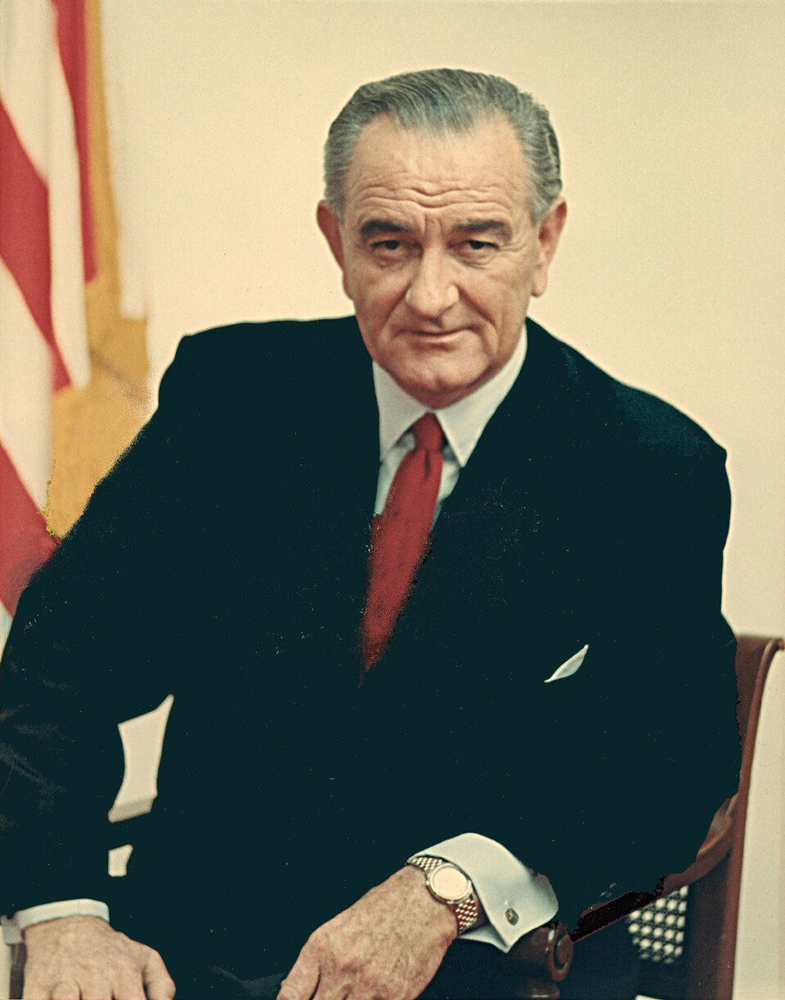
Джонсон Бэйнс Линдон
1908–1973
36-й президент США (1963–1969)
Ли́ндон Бэйнс Джо́нсон (англ. Lyndon Baines Johnson; 27 августа 1908, Стонуолл, округ Гиллеспи, штат Техас, США — 22 января 1973, Стонуолл, округ Гиллеспи, штат Техас, США), известный также как LBJ — американский политический и государственный деятель, 36-й президент США (1963—1969) и 37-й вице-президент США (1961—1963; при президенте Джоне Кеннеди) от Демократической партии. Раньше был членом Палаты представителей США от 10-го избирательного округа Техаса (1937—1949), сенатор от штата Техас (1949—1961). Инициатор крупных преобразований по защите прав человека: в частности, в 1964 году им был подписан Закон о гражданских правах, предложенный годом ранее президентом Кеннеди и запрещающий расовую дискриминацию. Линдон Джонсон проводил также реформы здравоохранения США, введя медицинское страхование для малоимущих (Медикейд) и пенсионеров (Медикэр) в 1965 году.
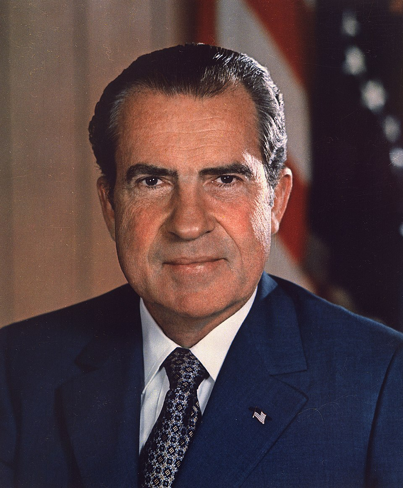
Никсон Милхауз Ричард
1913–1994
37-й президент США (1969–1974)
Ри́чард Ми́лхауз Ни́ксон (англ. Richard Milhous Nixon; 9 января 1913, Йорба-Линда, штат Калифорния, США — 22 апреля 1994, Нью-Йорк, США) — американский политический и государственный деятель, 37-й президент (1969—1974) и 36-й вице-президент США (1953—1961) от Республиканской партии. Единственный президент США, ушедший в отставку до окончания срока. В 1946 году был избран в Палату представителей США от Калифорнии, а в 1950 году — в сенат. В 1953 был выбран Дуайтом Эйзенхауэром как напарник на выборах и после его победы стал вице-президентом. Минимально уступил на президентских выборах 1960 года Джону Кеннеди. В 1962 году так же безуспешно участвовал в выборах губернатора Калифорнии, после которых объявил о завершении своей политической карьеры. Несмотря на это, в 1968 году он вновь баллотировался на пост президента и победил действующего вице-президента Хьюберта Хамфри. Будучи президентом, в 1973 году завершил вывод американских войск из Вьетнама. До этого, в 1969 году, американский Аполлон-11 во главе с Нилом Армстронгом приземлился на Луну. Помимо этого, Никсон создал Агентство по охране окружающей среды, а также принял ряд законов, связанных с защитой природы. В 1971 году Никсон начал войну с наркотиками. В 1972 году был переизбран на новый срок со значительным отрывом от своего соперника Джорджа Макговерна. В 1974 году добровольно сложил с себя полномочия президента в результате Уотергейтского скандала, в ходе которого Никсон спонсировал незаконное проникновение в штаб Демократической партии и пытался скрыть своё участие в проникновении. Это был первый в истории США случай отставки главы государства. Был помилован своим вице-президентом Джеральдом Фордом. Исторические оценки президентства Никсона разнятся: некоторые исследователи хвалят его достижения на посту президента, в то время как другие подчёркивают обстоятельства отставки.

Обама Хуссейн Барак
1961–н.в.
44-й президент США (2009–2017)
Бара́к Хуссе́йн Оба́ма II (англ. Barack Hussein Obama II, произносится [bəˈrɑːk huːˈseɪn oʊˈbɑːmə], род. 4 августа 1961, Гонолулу, Гавайи, США) — американский государственный и политический деятель, 44-й президент США с 20 января 2009 года по 20 января 2017 года. Лауреат Нобелевской премии мира 2009 года. До избрания президентом являлся федеральным сенатором от штата Иллинойс. Был впервые избран в ноябре 2008 года, переизбран на второй президентский срок в 2012 году. Первый афроамериканец, выдвинутый на пост президента США от одной из двух крупнейших партий, и первый в национальной истории глав государства темнокожий президент, а также президент с фамилией африканского и средним именем арабского этимологического происхождения. Обама — мулат, но, в отличие от большинства чёрных американцев, не потомок рабов, а сын студента из Кении и белой американки (Стэнли Энн Данхэм). Выпускник Колумбийского университета и Школы права Гарвардского университета, где он также был первым за всю его историю афроамериканцем — редактором университетского издания Harvard Law Review. Обама также работал общественным организатором и адвокатом в области гражданских прав. Преподавал конституционное право в Чикагском институте юридических наук с 1992 по 2004 год и одновременно трижды, в период с 1997 по 2004 год, избирался в сенат штата Иллинойс. После неудачной попытки баллотироваться в 2000 году в Палату представителей США в январе 2003 года баллотировался в Сенат США. После победы на праймериз (первичных выборах) в марте 2004 года Обама произнёс основную речь на Демократическом национальном съезде в июле 2004 года. Был избран в Сенат в ноябре 2004 года, набрав 70 % голосов. Как член Демократического меньшинства в Конгрессе 109-го созыва, он помог создать законы о регулировании обычных вооружений и увеличении прозрачности в использовании государственного бюджета. Он также совершил официальные поездки в Восточную Европу (в том числе в Россию), на Ближний Восток и в Африку. Во время работы в Конгрессе 110-го созыва участвовал в создании законов, касающихся мошенничества на выборах, лоббизма, изменения климата, ядерного терроризма и демобилизовавшихся американских военнослужащих. Обама объявил о желании баллотироваться в президенты в феврале 2007 года и в 2008 году на президентских праймериз на Демократическом национальном съезде был официально выдвинут от Демократической партии кандидатом в президенты вместе с кандидатом на пост вице-президента — сенатором от штата Делавэр Джозефом Байденом. На президентских выборах 2008 года Обама опередил кандидата от правившей Республиканской партии Джона Маккейна, набрав 52,9 % голосов избирателей и 365 голосов в коллегии выборщиков против 45,7 % и 173 у Маккейна. 9 октября 2009 года получил Нобелевскую премию мира с формулировкой «за экстраординарные усилия в укреплении международной дипломатии и сотрудничества между людьми». На президентских выборах 2012 года Обама опередил кандидата от Республиканской партии Митта Ромни, набрав 51,1 % голосов избирателей и 332 голоса в коллегии выборщиков против 47,2 % и 206 — у Ромни. Обама покинул свой пост 20 января 2017 года с рейтингом одобрения 60 %. В настоящее время он проживает в Вашингтоне. С тех пор его президентство положительно оценивается историками и широкой публикой. У него также был высокий рейтинг глобального одобрения, и репутация Соединённых Штатов резко изменилась во время его президентства.
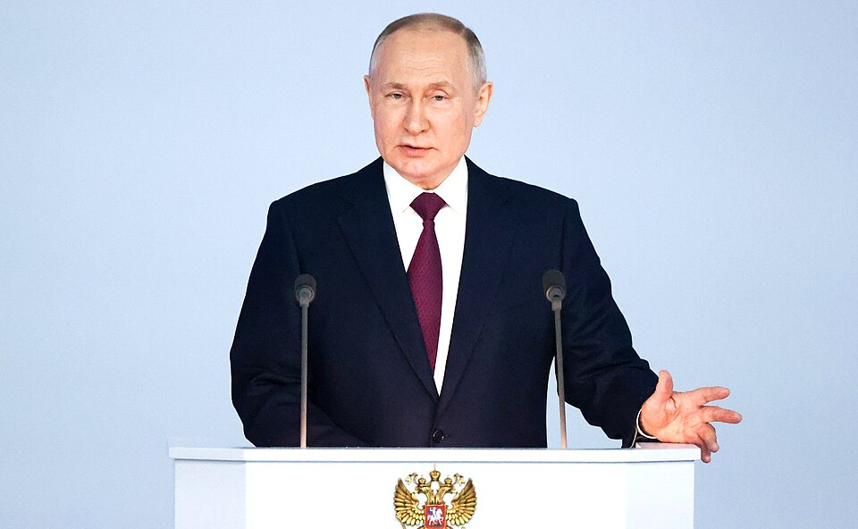
Путин Владимир Владимирович
1952–н.в.
Президент РФ (2000–2008, 2012–н.в.)
Влади́мир Влади́мирович Пу́тин (род. 7 октября 1952, Ленинград, СССР) — российский государственный и политический деятель. Действующий президент Российской Федерации, председатель Государственного Совета Российской Федерации и Совета Безопасности Российской Федерации; Верховный Главнокомандующий Вооружёнными Силами Российской Федерации с 7 мая 2012 года. Ранее занимал должность президента с 7 мая 2000 года по 7 мая 2008 года, также в 1999—2000 и 2008—2012 годах занимал должность председателя правительства Российской Федерации. Переизбран на должность президента России в ходе выборов, прошедших с 15 по 17 марта 2024 года (за него проголосовали 76 277 708 человек или 87,28 %). Выпускник юридического факультета Ленинградского государственного университета (ЛГУ). С 1977 года работал в следственном отделе Управления КГБ СССР по Ленинграду и Ленинградской области. С 1985 по 1990 год служил в резидентуре советской внешней разведки в ГДР. По возвращении в Ленинград работал помощником ректора ЛГУ, затем советником председателя Ленинградского горсовета Анатолия Собчака. Уволившись из КГБ 20 августа 1991 года, продолжил работу в мэрии Санкт-Петербурга. После поражения Собчака на губернаторских выборах 1996 года переехал в Москву, где был назначен заместителем управляющего делами президента РФ. В 1997 году Путин получил степень кандидата экономических наук. После пребывания во главе Федеральной службы безопасности РФ и на посту секретаря Совета Безопасности в августе 1999 года возглавил правительство. Первым лицом государства стал 31 декабря 1999 года, когда после отставки президента России Бориса Ельцина был назначен исполняющим обязанности президента. Впервые избран президентом России 26 марта 2000 года, а затем переизбирался в 2004, 2012, 2018 и 2024 годах. Перед выборами 2012 года срок президентских полномочий был конституционно увеличен с 4 до 6 лет. После принятия поправок к Конституции Российской Федерации получил право выставлять свою кандидатуру и на президентских выборах в 2024 году. Во время первого президентского срока Владимира Путина российская экономика после экономических реформ и пятикратного повышения цен на нефть и газ росла в среднем на 7 % процентов в год. При нём Россия одержала победу во Второй чеченской войне. Будучи в 2008—2012 годах председателем Правительства при президенте Дмитрии Медведеве, Путин руководил реформами армии и полиции.
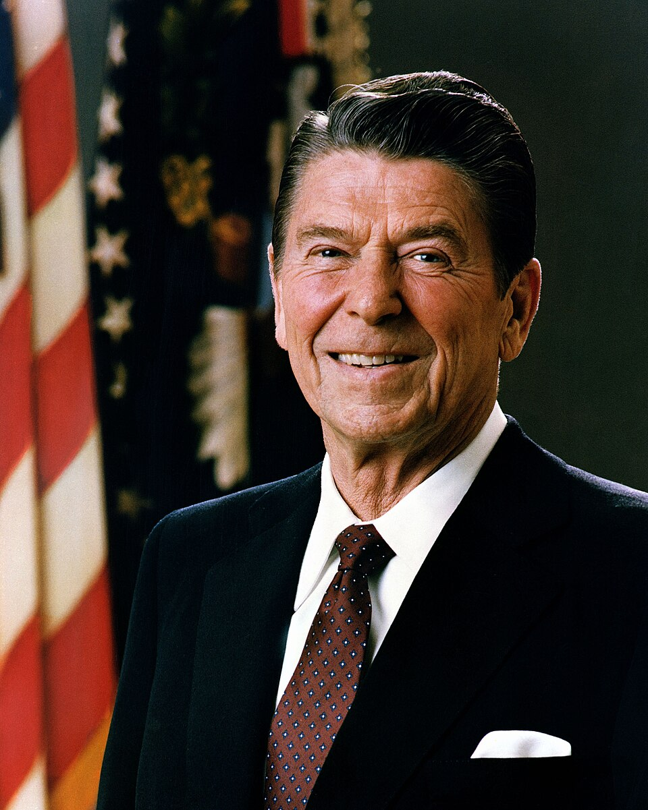
Рейган Уилсон Рональд
1911–2004
40-й президент США (1981–1989)
Ро́нальд Уи́лсон Ре́йган (англ. Ronald Wilson Reagan американское произношение: [ˈreɪɡən]; 6 февраля 1911, Тампико, штат Иллинойс, США — 5 июня 2004, Лос-Анджелес, штат Калифорния, США) — американский государственный и политический деятель, актёр, 40-й президент США (1981—1989) от Республиканской партии. Рейган как политик известен своей социально-экономической инициативой внедрения англосаксонской модели и рейганомикой. Был президентом Гильдии киноактёров США (1947—1952, 1959—1960) и 33-м губернатором штата Калифорния (1967—1975). Также известен как теле- и радиоведущий. В 1976 году Рейган боролся на праймериз Республиканской партии, но проиграл действующему президенту Джеральду Форду. В 1980 году выиграл праймериз и сокрушил на президентских выборах президента Джимми Картера. В 1984 году победил повторно. За свою каденцию Рейган и его администрация развили модель «рейганомики», которая включала дерегулирование экономики, а также сокращение налогов и государственных расходов. Он усилил гонку вооружений и отошёл от политики «холодной войны» к диалогу разрядки с Советским Союзом (вместе с советским лидером Михаилом Горбачёвым предотвратил возможность ядерной войны, кульминацией чего стал Договор о ликвидации ракет средней и меньшей дальности). Фактически за период президентства Рейгана США победили СССР в «холодной войне». Рональд Рейган существенно повлиял на становление классического американского консерватизма и модели правого экономического либерализма. Его историческая роль очень высоко оценивается в работах историков и современных американских опросах.
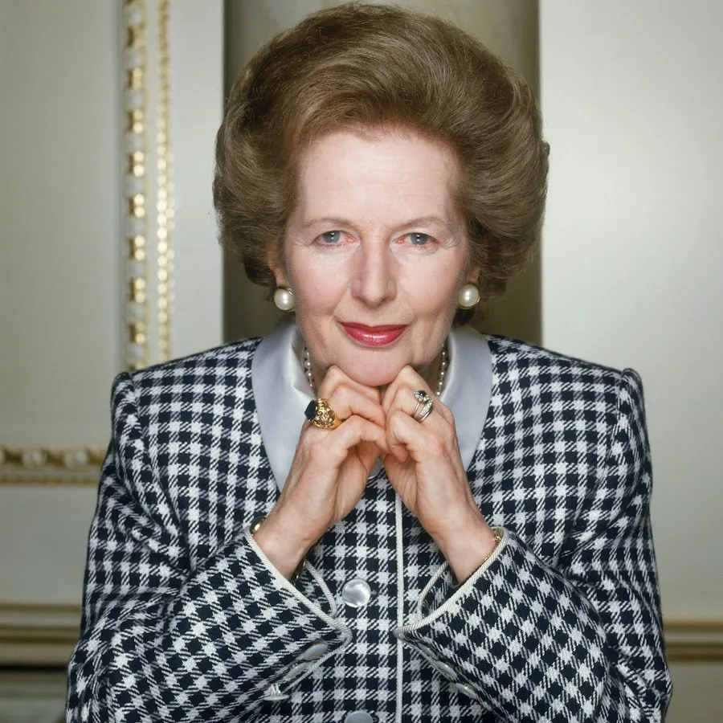
Тэтчер Хильда Маргарет
1925–2013
Премьер-министр Великобритании (1979–1990)
Ма́ргарет Хи́льда Тэ́тчер, бароне́сса Тэ́тчер (англ. Margaret Hilda Thatcher, Baroness Thatcher; урождённая Ро́бертс; 13 октября 1925, Грантем — 8 апреля 2013, Лондон) — британский государственный и политический деятель. Премьер-министр Великобритании (Консервативная партия Великобритании) в 1979—1990 годах, лидер Консервативной партии в 1975—1990 годах, баронесса с 1992 года. Первая женщина, занявшая этот пост, а также первая женщина, ставшая премьер-министром европейского государства. Премьерство Тэтчер стало самым продолжительным в XX веке. Получив прозвище «железная леди» за резкую критику советского руководства, она воплотила в жизнь ряд консервативных мер, ставших частью политики так называемого «тэтчеризма». Будучи главой правительства, провела политические и экономические реформы для преодоления того, что она считала упадком страны. Её политическая философия и экономическая политика основывались на дерегуляции, в особенности финансовой системы, обеспечении гибкого рынка труда, приватизации государственных компаний и уменьшении влияния профсоюзов. Высокая популярность Тэтчер во время первых лет её правления уменьшилась из-за рецессии и высокого уровня безработицы, но снова увеличилась во время Фолклендской войны 1982 года и экономического роста, что привело к её переизбранию в 1983 году. Тэтчер была переизбрана в третий раз в 1987 году, но предложенный закон о подушном налоге (англ. poll tax) и взгляды на роль Британии в Европейском союзе были непопулярны среди членов её правительства. После того, как Майкл Хезелтайн оспорил её лидерство в партии, Тэтчер была вынуждена подать в отставку с поста главы партии и премьер-министра.
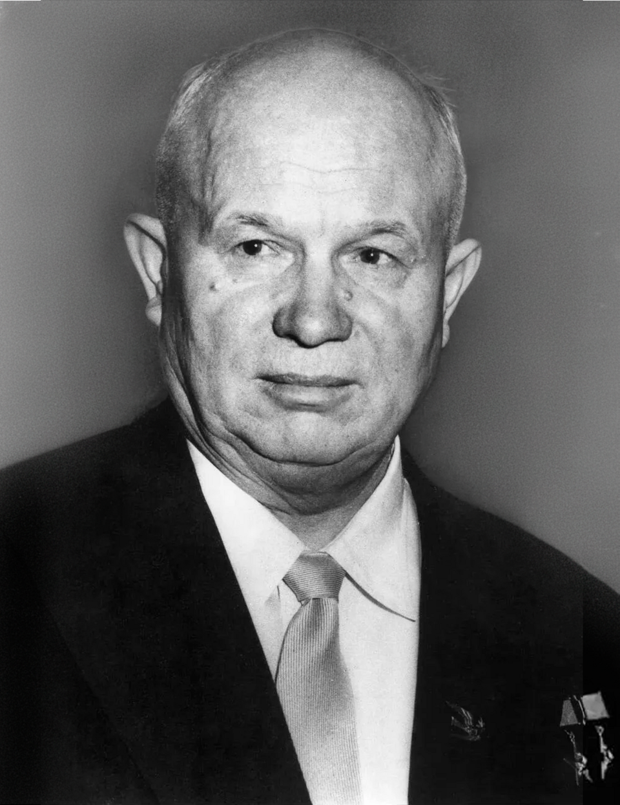
Хрущев Никита Сергеевич
1894–1971
Первый секретарь ЦК КПСС (1953–1964)
Ники́та Серге́евич Хрущёв (3 [15] апреля 1894, Калиновка, Курская губерния, Российская империя — 11 сентября 1971, Москва, СССР) — советский партийный и государственный деятель. Первый секретарь ЦК КПСС (1953—1964). Председатель Совета министров СССР (1958—1964). Председатель Бюро ЦК КПСС по РСФСР (1956—1964). Герой Советского Союза (1964), трижды Герой Социалистического Труда (1954, 1957, 1961), лауреат Международной Ленинской премии «За укрепление мира между народами» (1959) и Национальной премии Украины им. Тараса Шевченко (1964), кавалер семи орденов Ленина (1935, 1944, 1948, 1954, 1957, 1961, 1964). Участник Великой Отечественной войны. Период правления Хрущёва часто называют «оттепелью»: были выпущены на свободу многие политические заключённые, по сравнению с периодом правления Сталина активность репрессий значительно снизилась, началась реабилитация жертв необоснованных сталинских репрессий. Из ссылки в места исконного проживания возвращены депортированные народы. Было отменено уголовное наказание за аборты и опоздания на работу и снят запрет на перемену места работы. Существенно сокращена продолжительность рабочего дня и увеличен оплачиваемый отпуск. Были повышены в три раза государственные закупочные цены на продукцию колхозов, проведена денежная реформа, которая позволила стабилизировать экономику страны на десятилетия вперёд. Принят новый закон о всеобщем пенсионном обеспечении. При Хрущёве было развёрнуто активное жилищное строительство и возвращена архитектура модернизма. Была произведена реформа в сфере транспорта, началось строительство новых магистралей. На железных дорогах была прекращена массовая эксплуатация паровозов (их заменили тепловозы и электровозы). Советский Союз достиг больших успехов в покорении космоса. Вместе с тем с именем Хрущёва связаны и организация самой жёсткой в послевоенный период антирелигиозной кампании, расстрел рабочих в Новочеркасске, судебные процессы с вынесением смертных приговоров против валютчиков и цеховиков, которых советская пропаганда называла «расхитителями социалистической собственности», принятие ошибочных решений в сельском хозяйстве (в частности, просчёты при освоении целины, укрупнение сёл), подавление Венгерского восстания 1956 года. Неоднозначно оцениваются решения Хрущёва во внешней политике (Карибский кризис). В период его правления усилилось напряжение в отношениях между СССР и США, наблюдалась самая острая фаза холодной войны. Политика ЦК КПСС под его руководством по десталинизации привела к разрыву с коммунистическими правительствами Энвера Ходжи в Албании и Мао Цзэдуна в Китае. Тем не менее, Китаю было оказано существенное содействие в разработке собственного ядерного оружия и частично переданы имевшиеся в СССР технологии его производства.